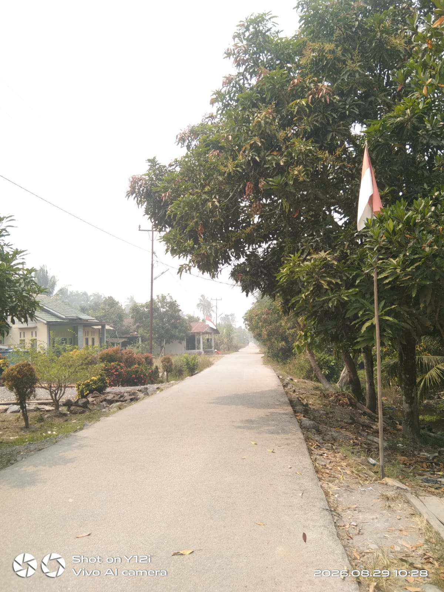
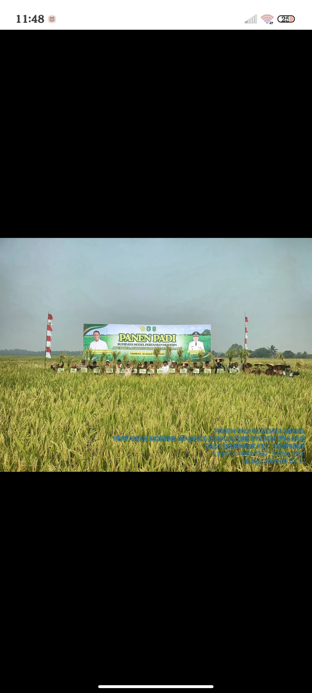
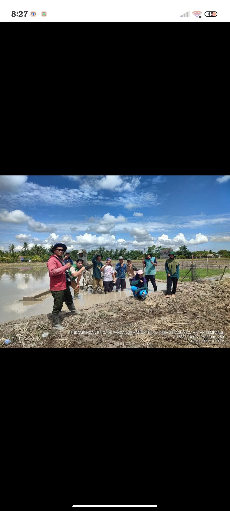
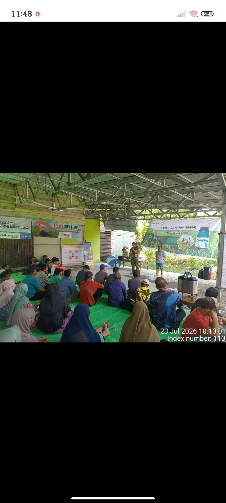

Galeri Desa Seburing
Dokumentasi kegiatan dan suasana Desa Seburing

Sekolah Dasar Seburing

Akses Jalan Seburing

Masjid Seburing

Persawahan Desa Seburing

“Kebersamaan masyarakat dalam mendukung kegiatan pertanian dan ketahanan pangan desa.”

Kegiatan Rapat di Kantor Desa Seburing